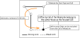
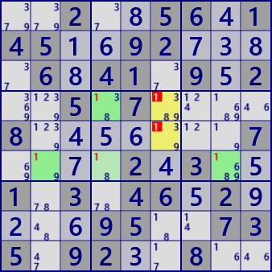

X-Chain
X-Chainは、1数字の強いリンクと弱いリンクの連結で生じるLockedを用いた解析アルゴリズムです。
着目数字Xを設定し、着目セルからの強いリンクで開始して、強・弱のリンクを交互に連結して連を作ります。
弱いリンクの先のセルが着目セルと同じhouseに属するとき、このセルの候補数字からXを除外できます。
強いリンクは弱いリンクでもあるので、連は強・強・強となることもあります。

X-Chainの例です。

X-Chain #1Stem : r4c4
Eliminated : r45c6
 X-Chain #7
X-Chain #7Stem : r7c6
Eliminated : r1c6 r8c4
(in GNPX) paste the next 81 digits onto the grid and solve with /Solve/MultiSolve/
..2..56.145..92....6.41.9.2..5.7....8.......7....2.3..1.3.46.2....95..735.92..8..
...4..296.79..2..3.42..351.4.......2.....1.5..21.54..92.8...9..9.4.3...116.9.5.4.